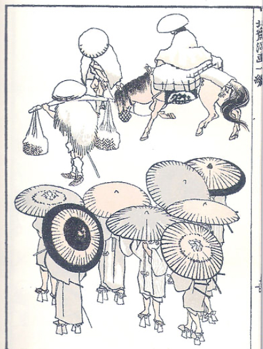
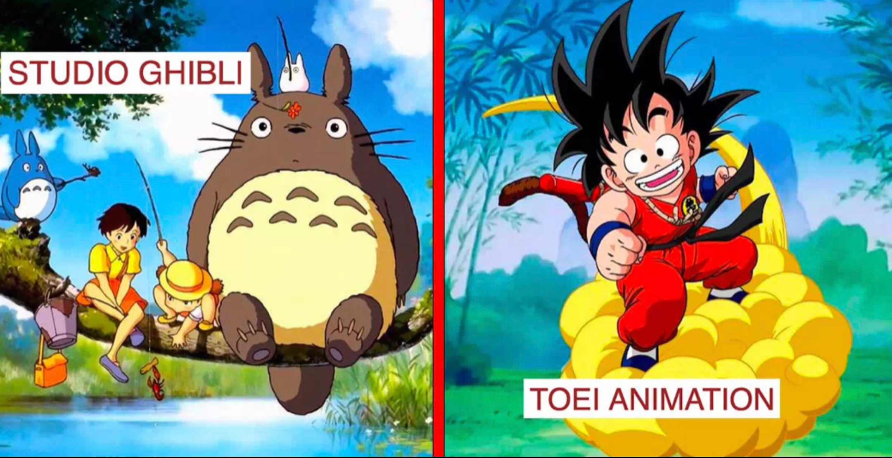
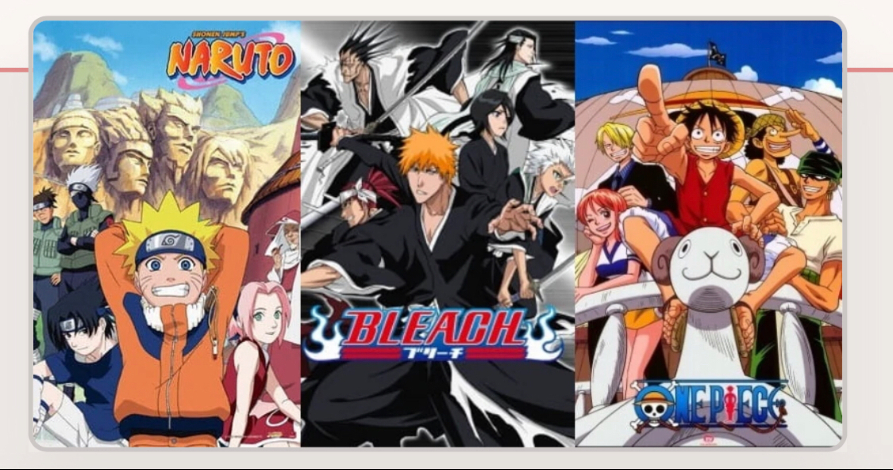

Un anime (prononcé Animé) est une série ou un film japonais, dans le style dessins animés, mais qui n'est pas forcément destiné aux enfants.
Le manga est une bande dessinée japonaise. Originalement créé/développé par Hokusai Katsushika, le manga est pour le Japon ce que sont les BD franco-belges pour l’Europe ou les comics pour les États-Unis. Le manga se distingue des autres BDs par sa cadence de production, qui est plus rapide, et par son sens de lecture qui est l’inverse de celui des BDs occidentales. Le mot « manga » existait déjà dans la langue japonaise au 19eme siecle : il signifiait alors dessin ou estampe. Les mangas sont actuellement très à la mode ; ils représentent 22 % des achats de bandes dessinées en France. D'ailleurs, la France est le deuxième pays, après le Japon, qui consomme le plus de mangas dans le monde. Ils sont également représentés sous forme d'anime (séries d’animation parfois inspirées d’un manga).
Un studio d'animation est un lieu destiné à la fabrication d'oeuvres cinematographiques ou télévisuelle en animation. Les locaux dépendent de la forme d'animation : Plateau de cinéma pour l'animation en volume, bureaux avec table à dessin pour l'animation traditionnelle même si l'informatique a remplacé une grande partie des métiers d'origine, bureaux informatisés pour l'animation en image de synthèse. 
Il existe plus d'une centaine d'anime dans le monde donc il y a forcement un classement. Les trois animes les plus connus sont : - Bleach; - Naruto; - One piece Ce classement est aussi appeler le BIG THREE
